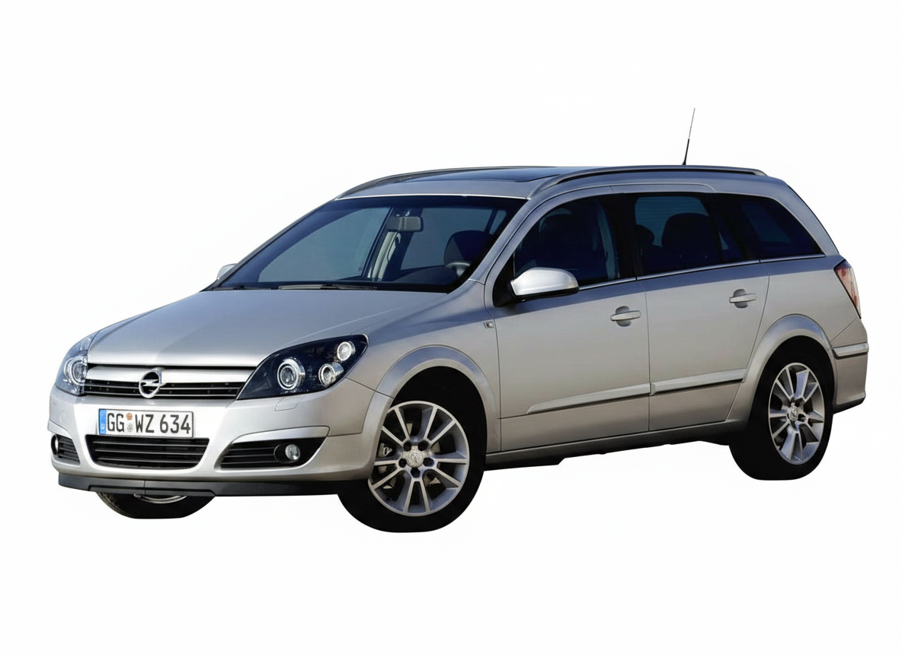

Vehicle locked
Your Astra was secured at 18:42.
2 minutes agoASTRALINK
CARAVAN · SILVER

Last synced moments ago
VEHICLE POSITION
Pinch or drag the map
Bucharest, Romania
DRIVING HISTORY
Select the first day of your period
AUGUST TOTAL
486.2 kmFUEL ACTIVITY
August overviewPERSONALISE
AstraLink 2.0 · Designed for Astra H
FUEL ESTIMATE
Tank capacity 52 L
Estimate uses the current 52-litre tank capacity and rounds to the nearest 0.01 RON.
ASTRALINK
Your Astra was secured at 18:42.
2 minutes agoEstimated range is now 342 km.
Today, 18:40Astra H was parked near Piața Unirii.
Today, 17:0212.8 km added to your driving history.
Today, 16:48Doors, windows and boot are securely closed.
Yesterday, 22:14TRIP DETAILS
MY VEHICLE
Enter a valid 17-character VIN without I, O or Q.
Front-end preview using the configured Astra profile. Factory records will replace these values when the decoder service is connected.
IPHONE
Open AstraLink in Safari.
2Tap the Share button.
3Choose Add to Home Screen.